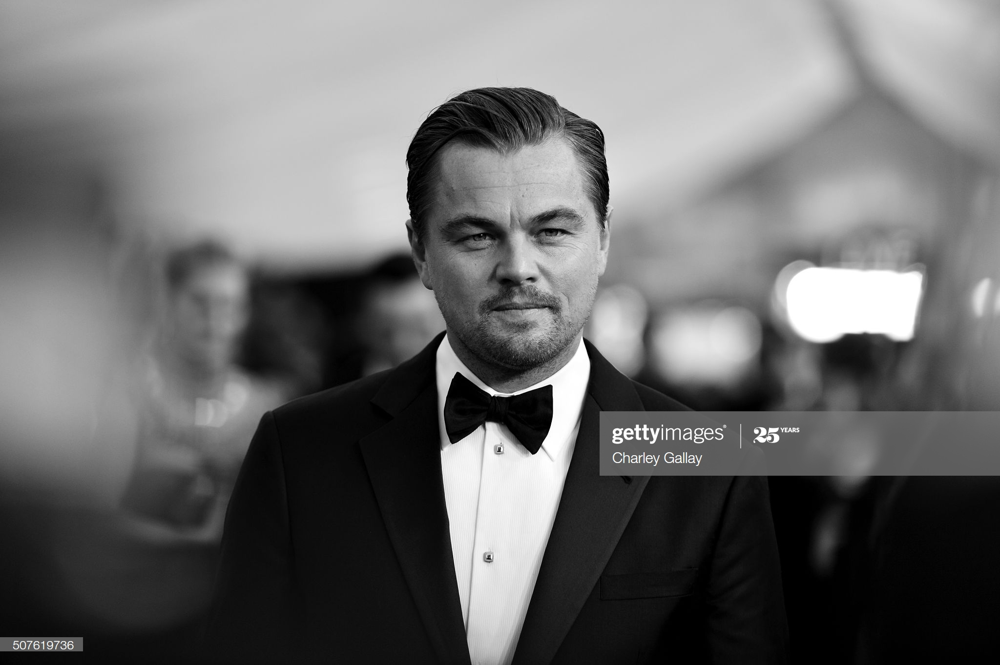

“Climate change is real. It is happening right now, it is the most urgent
threat facing our entire species and we need to work collectively together
and stop procrastinating.”

Leonardo DiCaprio, gettyImages
DiCaprio is identified as one of the most active celebrities in the climate change movement.
On 1998 he founded his foundation, aptly named the Leonardo DiCaprio Foundation. Although concerned with all areas of the environment, it focuses on global warming, preserving Earth's biodiversity and supporting renewable energy.
A benefit "11th Hour" fine art auction he organized in 2013, raised nearly $40 million for his foundation. It became the world's highest-grossing environmental charity event ever held.
In 2014, he was appointed as a United Nations representative on climate change, and later that year he made an opening statement to members of the UN Climate Summit.
He again spoke at the UN in April 2016 prior to the signing of the Paris Climate Change Agreement.
In 2019, DiCaprio’s environmental NGO Earth Alliance has pledged $5 million in order to help protect the Amazon after fires destroyed large parts of the rainforest in July and August of that year.
DiCaprio also produced, hosted, and narrated the documentary Before the Flood about climate change,
and narrated the documentary Ice on Fire about global warming.
BEFORE THE FLOOD - Official Trailer
ICE ON FIRE - Official Trailer
You can find more information about Leonardo DiCaprio on his wikipedia page.